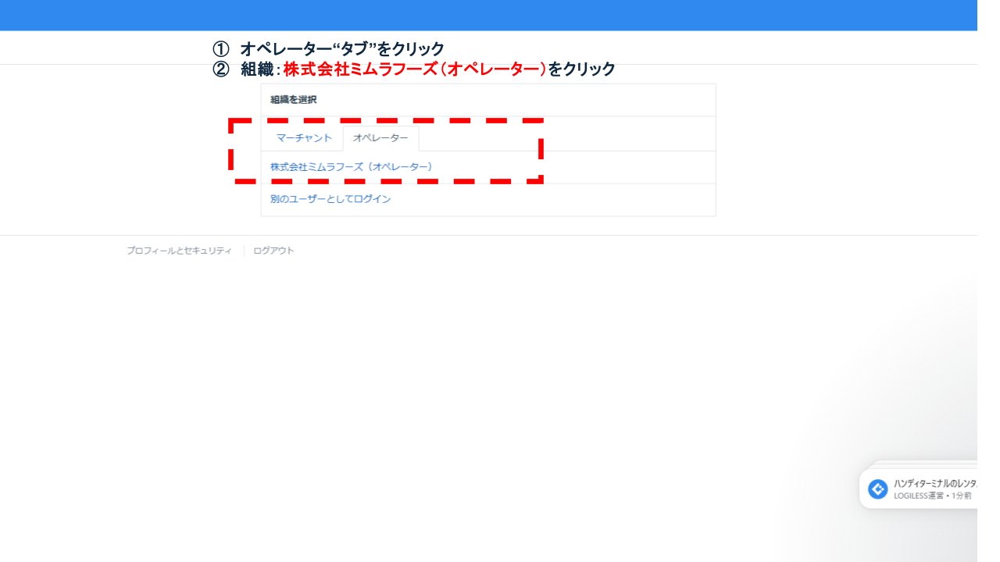
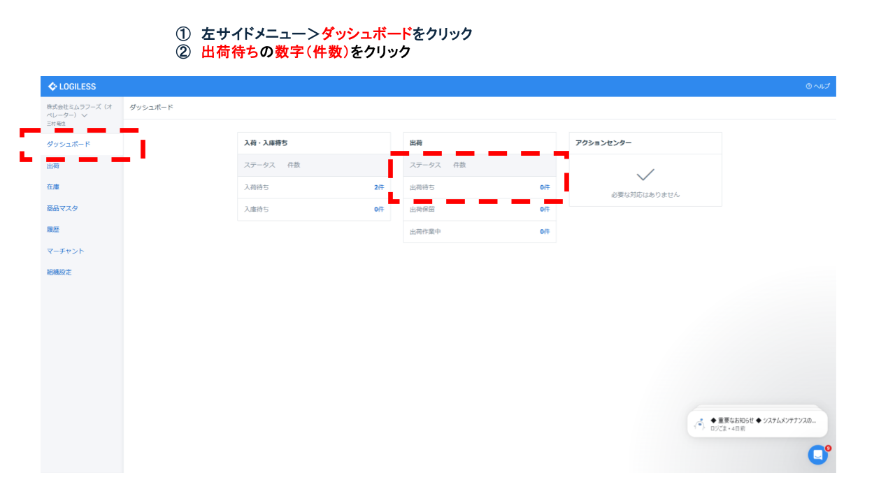
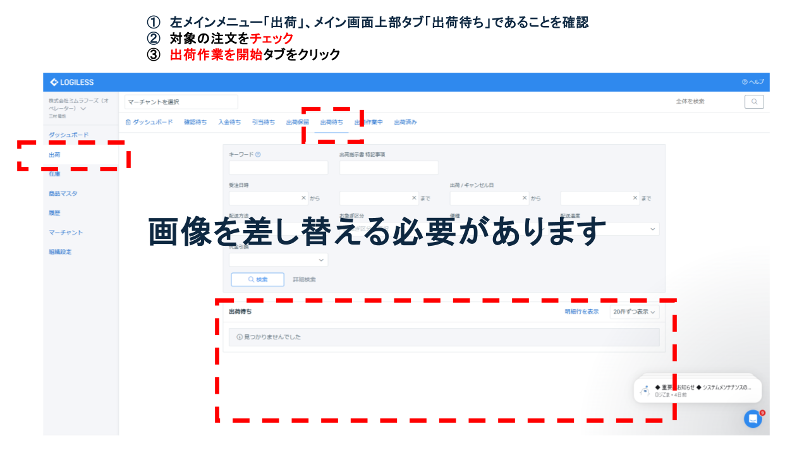
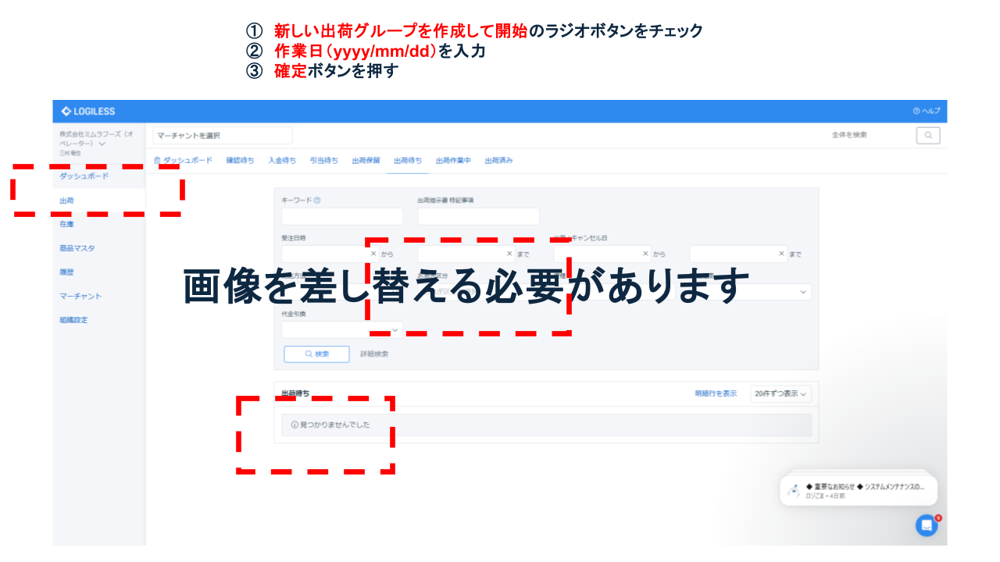
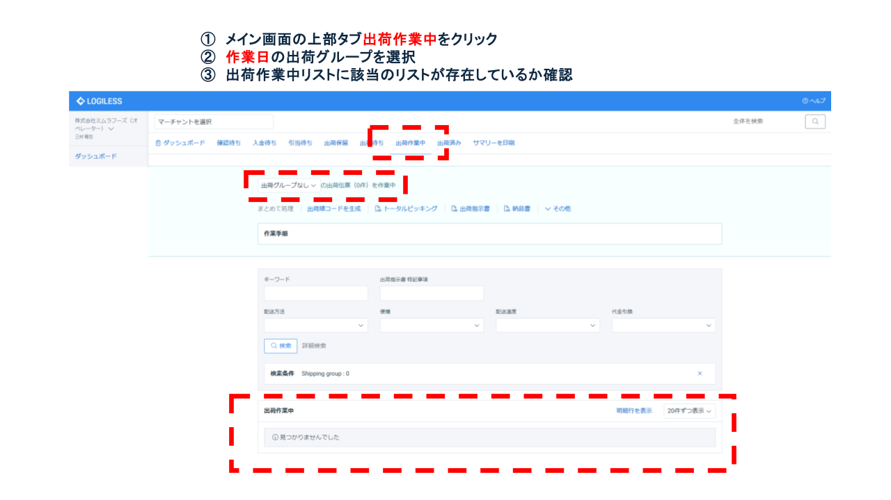

業務概要
目的：出荷当日の作業（資材準備・ピッキングリスト出力／梱包形態の事前確認・伝票準備）を標準化し、誤出荷・欠品ミスを防止する。
範囲：出荷指示受領後ピッキング開始直前まで。作業日の確認／「出荷待ち」から「出荷作業中」へのステータス変更／資材の数量確認補充。
前提：受注確定・在庫引当済み、LOGILESSの出荷指示が作成済み。
成果物：ステータス変更（出荷作業中）／出荷資材一式。
ログイン情報・接続先
ログイン情報は定期的に変更されるため、最新版はIT管理者に確認してください。外部公開時はマスキングまたは非表示。
LOGILESS
| 項目 | 内容 |
|---|---|
| システム名 | LOGILESS |
| ログインURL | https://app.logiless.com/ |
| ユーザーID | mimurafoods@googlegroups.com |
| パスワード | Mimura20250712 |
| 備考 | 社内利用に限り平文可。外部公開時はマスキングまたは非表示。 |
プリンタ
| 項目 | 内容 |
|---|---|
| システム名 | プリンタ |
| 接続方法 | ネットワーク接続 |
| アカウント | なし |
| 備考 | A4/ラベルの用紙設定を確認 |
操作手順
1. 作業日・倉庫の確認
他の出荷作業・倉庫利用日を考慮して、作業ミスが生じない日程を決定する。
2. 使用ツールにログイン

ID・パスワードを使用してLOGILESSにアクセスし、管理画面へログインします。
3. 組織を選択
ログイン後、画面上部の組織選択から「オペレーター」タブを選択し「株式会社ミムラフーズ（オペレーター）」を選択します。

4. 出荷待ちを選択
左メインメニュー「ダッシュボード」を選択し、出荷の表から「出荷待ち」の「数字（件数）」を選ぶ。

5. 対象の注文を出荷作業開始に変更
対象の注文をチェックボックスにチェックを入れる。「出荷作業を開始」タブをクリックする。

6. 出荷グループを作成する
出荷作業中の出荷伝票をグループ化することができます。グループ名は「作業日（yyyy/mm/dd）」で記載します。

7. 出荷作業中を確認
出荷作業中に対象の出荷伝票が作成できているか確認する。出荷グループを選択して、出荷作業リストが存在しているか確認する。
注意事項
- 資格情報の管理：ログイン情報は必ず最新版を使用し、外部公開時はマスキング。
- ステータス変更の徹底：「出荷待ち」→「出荷作業中」への更新を忘れない。
- ハイシーズン対応：夏季・年末は保冷剤係数を増やす。
- 例外処理：欠品・分納が発生した場合はLOGILESS備考欄へ記録し、担当者に即時連絡する。
RACI定義表
| 作業項目 | R（実行） | A（責任） | C（相談） | I（共有） |
|---|---|---|---|---|
| 出荷準備 | 出荷担当 | 商品管理責任者 | 受注・出荷指示担当 | 出荷担当担当 |